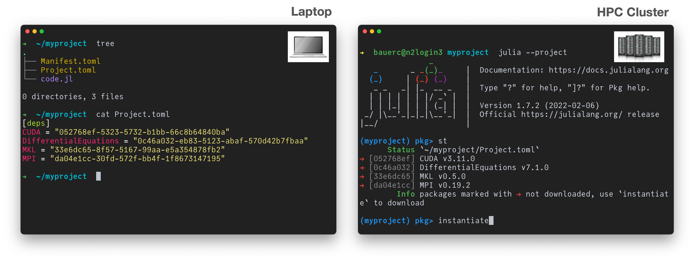

Package Management
Contents
Package Management#
Package environments#
When working on a project in Julia we’re almost always using external packages.
This means that our project code depends on packages. It can only be executed when those packages are present on the executing machine.
Even then, since packages change over time, executability is only guaranteed if we have the exact same versions of the packages that we had when writing the code.
Imagine you want to share the code with someone, like a colleague or your future self.
Sharing the code alone is often not enough!
Instead you’d want to share your code and a snapshot of your package environment.
Fortunately, this is pretty straightforward in Julia.
Let’s switch to the REPL to explore environment…..#
To learn more about Julia’s package manager and environments in particular, feel free to checkout the following videos:
and, of course, the corresponding part of the Julia documentation.
Most important commands:
] status] add SomePackage] remove SomePackage] instantiate
Binary dependencies and Julia library (JLL) packages#
Since Julia 1.3+, Julia supports attaching arbitrary data to projects and packages in the form of Julia Artifacts.
JLL packages use this infrastructure to provide versioned binary dependencies. They are just wrapper packages without further functionality. Just add them to your Julia project / environment to also explicitly state the dependency on binary software.
You can find the JLL packages here: JuliaBinaryWrappers
Examples: Hwloc_jll.jl (provides the shared library libhwloc) or CUDA_jll.
using Hwloc_jll
Hwloc_jll.libhwloc
"/usr/local/julia/local/share/julia/artifacts/6ae3cfc973b59c2dc2c0b05d6f6f9e86438fd94f/lib/libhwloc.so"
using Libdl
dlopen(Hwloc_jll.libhwloc) do lib
dlsym(lib, :hwloc_topology_init)
end
Ptr{Nothing} @0x00007ff55c4e5770
Production pipeline#
BinaryBuilder: Tools for building binary packages (cross compiling them in a sandbox environment)
Yggdrasil: Community buildtree of BinaryBuilder recipes for building binary packages.
JuliaBinaryWrappers: Final Julia packages that wrap binary dependencies.
Pipeline: BinaryBuilder → Yggdrasil → JuliaBinaryWrappers
Core message of this part#
Storing the package environment next to code makes code reproducible. It’s only a
] activate .and a couple of] adds away.] instantiatecan be used to get all the packages of an environmentJLL packages provide binary dependencies in a simple and reliable way.